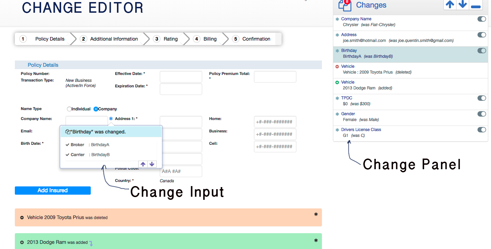

The concept of "Change Editor" really involves three distinct things.
- the parent/mediator changeEditor class
- a changePanel which is the component that lists the changes. typically located in top right of form.
- 0..n changeInput widgets which is the icon & popup beside each input field that has a change.

Basically, the developer will add some code to initialize the editor.
This in turn will always create a change panel and populate it with the given data (options.changes[])
It will then look for any related input fields and create appropriate changeInputs.
Any events triggered from the changePanel or changeInputs will be handled by the changeEditor class.
It is very important to understand that the whole thing is based on the assumption that there will be
1: data sent with an array of changes = {id: ?, type:'add|modify|delete', values:[])
2: if an input element in the form is associated with that change, then it MUST have the attribute "data-change-id" with the appropriate matching value.
3: the options.config property has a map used to get the display value of the change.
for example:
if passed in the given options json object (i'm leaving out lots of properties for concision)
- Is this a wicket widget?
No. Currently it isn't but one that incoporated the required .js/.css could/should be written. But at the end of the day
all the real UI work is done on the browser in the DOM, not on the server side.
-
Are new changes (i.e. done by the user while looking at the form with existing changes) handled?
Yes. If the user clicks on a relevant [input] and changes it, a new change will be created and marked. It will show up in the panel
and look/act just like the other ones.
-
Are these new changes sent back to server?
No. But they could be if client is given a URL to post to. They will disappear once you leave the page.
-
Deleted entities can't be reverted like modifications. why?
In order to do that, the change editor would need to have a URL to post to *and* all of the details of the deleted entity (not just a description as shown now).
It could be done but most of the work is on the server side and it wasn't a required feature.
-
Added entities can't be reverted like modifications. why?
Basically same as above. In this case, the user can just click 'delete' themselves to revert. Again this is do-able with some work but not in initial scope.
-
Does this widget need to render on top of the full form?
Sort of. You can just show the editor without any form behind it, everything will look fine but keep in mind that...
- you are in effect in a read only state because there is no form being posted. .: any changes you make (by clicking on toggle buttons)
will *not* be changing any underlying form data (because there is none). So it could be used as a "look at the summary" type widget.
- display values for changes may not render correctly. for example, if there is a change based on a select...
option value="M" MALE
option value="F" FEMALE
the editor will *not* be able to show "MALE", instead it will show "M". This is because it can't inspect the underlying form and find the display value.
-
What dependencies are there?
The external dependencies are jquery/jquery ui.
It also depends on two utility files (Utils & IE_Shim) as well as the core .js/.css
-
What work is left to be done.
- there is a proposed concept of "rolling up changes". e.g. if a vehicle has many fields including make, year, manufacturer, colour and model etc.
then it is desired that if all those fields change it would just show up as "Vehicle X" has changed instead of "Vehicle X's make", "Vehicle X's year" etc...
- now, only simple inputs and easyJSCombo are supported. I did easyJScombo because it is the hardest and i'm sure all others can be handled but code
will be required in valHooks.js for other widget types (date picker, yes/no, etc...)
-
Can the change panel be moved/resized?
You can't move/resize it by dragging on corners. Currently there is a minimize button which collapses it to a single row
(maximize is configurable by .css with the default being about 8 rows). There is also a "fullwidth" mode in which it takes up the
full width of it's container. This mode is more suited for "view as summary" and offers no max/min capabilities.
-
Is there a limit to the number of changes?
No. the panel should scroll to acommodate any number. memory is not an issue because each change is pretty small.
-
I see in the example, the Handlebars templates are in the [head]? why? can i put them in the [body]?
They are in the head so they won't clutter up the body (note the use of the custom script type = "text/x-handlebars-template")
You could put them in the body - it's just a matter of preference.
-
Where should the html templates be? (in which file, who is responsible for adding them...)
In these examples, I put the templates directly in external pages but you could just add them directly to the target page.
If you specify options.config.template.source, that .html file will be loaded and appended to your DOm. If not, it assumes the selectors specified
(e.g. options.config.template.changePanelTitle etc...) will point to elements that exist in the DOM.
-
Do i *need* to have bootstrap for this?
If you use the default HTML templates you do because they involve bootstrap classes like "panel", "list-group" etc..
If you can't or don't want bootstrap, then supply your own html and .css. See below on how to configure your html.
-
What are the default options? Where do they live?
There are default options for pretty much everthing except...
- changes (the actual change data which must be sent from the server).
- labels this text data for the changes (like "Vehicle Manufacturer") or words like Broker/Carrier must also be sent from server.
This data is across all 3 levels of the widget. It depends on where it is relevant. For example, you will find the default changeInput title
template in ChangeInput.js. Look for variables called "defaultOptions" in the source for their values.
-
How do i change the layout/html.
This is done by specifying the selector for the templates used by the widget.
options.config.template = {
// contains the header part of the change panel
changePanelTitle: '#mypanelTitle',
// contains the template content for each change. (will be repeated for each one).
changePanelContent: '#mypanelcontent',
// template for additions. typically just an information blurb
add: '#myadd',
// same as "add" template.
delete: '#mydelete',
}
change these selectors to point to your own HTML templates and format/style them as you wish.
-
Can you show me an example of these aforementioned templates...i don't quite understand.
<script id="changePanelTitle" type="text/x-handlebars-template">
<div class="panel-heading hello-{{config.foo}}">
<span class="badge">{{changes.length}}</span>
<span class="change-panel-title">{{config.header}}</span>
</div>
</script>
Note that you put variables in {{ }} brackets. e.g. {{changes.length}} & {{config.header}}
These variables can appear anywhere in the html, not just inner html. (e.g. in attribute/class values, as prefix/suffixes...)
The variable names are relative to the json object you pass to the handlebars template.
i.e. here, we are passing the options object. it has a property called changes and config.
see Handlebars for complete docs on how to handle loops, referencing multiple objects,
caching templates, HTML escaping, helpers and everything you'll ever need to know.
-
How do i specify the container of the list of change items?
because you are only allowed to give the template of each item (this is iterated over), the widget creates a container for the change items.
it is always a div but you can configure the css class via the options.config.panelContainerClass property.
by default, it is 'change-panel panel panel-default'. The panel/panel-default classes are for bootstrap purposes.
-
Can I change the html attributes used?
Yes - currently the default is "data-change-id" & "data-ref-id".
These can be specified via options.config.idAttr & options.config.refAttr properties.
(*I would like to change it to "data-model-id" because it doesn't necessarily represent a change. the id is to identify
the place the data is stored.)
-
What is "inputIcon" and can i change it?
It is the icon put right beside the form field that has a change. In the image below, you will see a blue asterisk that is used.
It is declared in
options.config.inputIcon: '<li class="fa fa-asterisk"></li>'
Currently, it uses a font-awesome class but you can use whatever you want.
-
Hey, these input icons don't appear (or don't appear in the right spot)? What's up and how do i fix it.
Yeah, i expected that. Because the "assortment" of styling techniques to layout the form there is NO one size fits all way to
put an icon beside an input field. (I'll skip the gorey .css details but believe me you'll fail if you try). So instead,
the way to do this is try to get most fields working in a sane way and override the troublemakers with the following snippet of code in a
custom .css file you can add for your implementation.
[data-change-id="1"]+li.change-input-icon {
// put your overriding styles here for change with id 1.
}
[data-change-id="2"]+li.change-input-icon {
// put your overriding styles here for change with id 2.
}
etc...
Yeah, it's painful...i know. Please don't put these changes in a common, shared file. Keep it at the implementation level.